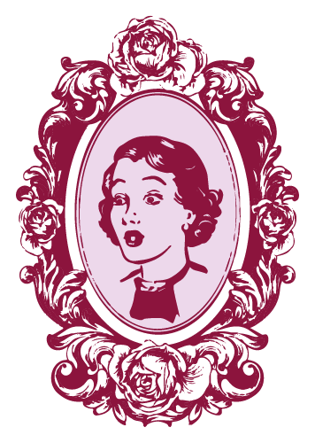
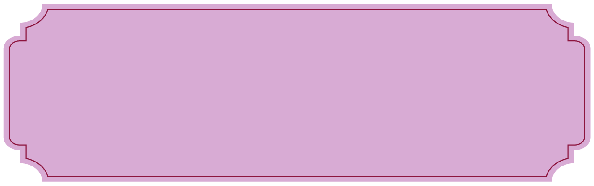
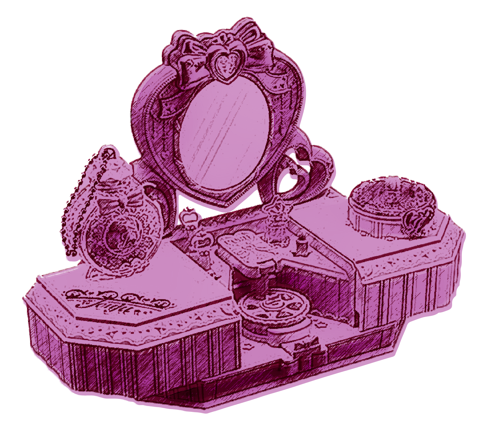

요즘 수많은 창작물 속 주인공들에게 '빙의'와 '회귀'라는 이상한 일이 심심찮게 벌어지고 있습니다.
눈 떠보니 학생 때 읽던 소설 속
백작영애
가 되어 있다던가,
핍박 받는 삶을 살다 죽고 깨어나보니
10년 전 과거
로 돌아와 있다던가...

비슷한 사건을 겪은 주인공들이 우후죽순 쏟아져 나오는 것으로 보아, 더이상은 마냥
허구의 사건이라고 볼 수 없을 것 같네요.
당장 다음 날이 밝으면 당신이 백작영애나 10년 전의 자신이 되어 있을지도 모릅니다.

학생 때 읽어서 줄거리도 잘 기억나지 않는
소설 속 주인공 백작영애에 빙의했을 때,
당신은 과연 이세계에서 주인공으로서의
새 삶을 잘 살아갈 수 있을까요?

갑자기 큰 사고를 당하고 10년 전으로 돌아가
갑자기 큰 사고를 당하고 10년 전으로 돌아가
고등학생으로 회귀했다면,
당신은 미래를 척척 기억하며
더 나은 인생을 만들 수 있을까요?
이런 걱정에 조금이라도 공감한 당신!
언제 벌어질지 모르는 빙의, 회귀에 대비해
리본부티크의 상품을 구비해 놓을 것을 추천합니다.
비누 메이커
당신이 떨어진 세계는 현대에서는 발에 채이는 문물들이 매우 희귀할 겁니다.
이를 테면 비누 같은 것 말이죠.
정체 모를 전염병에 걸리지 않고 여주인공으로서 살아남으려면 비누가 꼭 필요합니다.
세계관에 따라, 직접 만든 비누를 상품화 해 대부호가 되는 것을 노려볼 수도 있겠습니다.

Soap Maker
비누를 직접 손쉽게 만들 수 있는 키트.